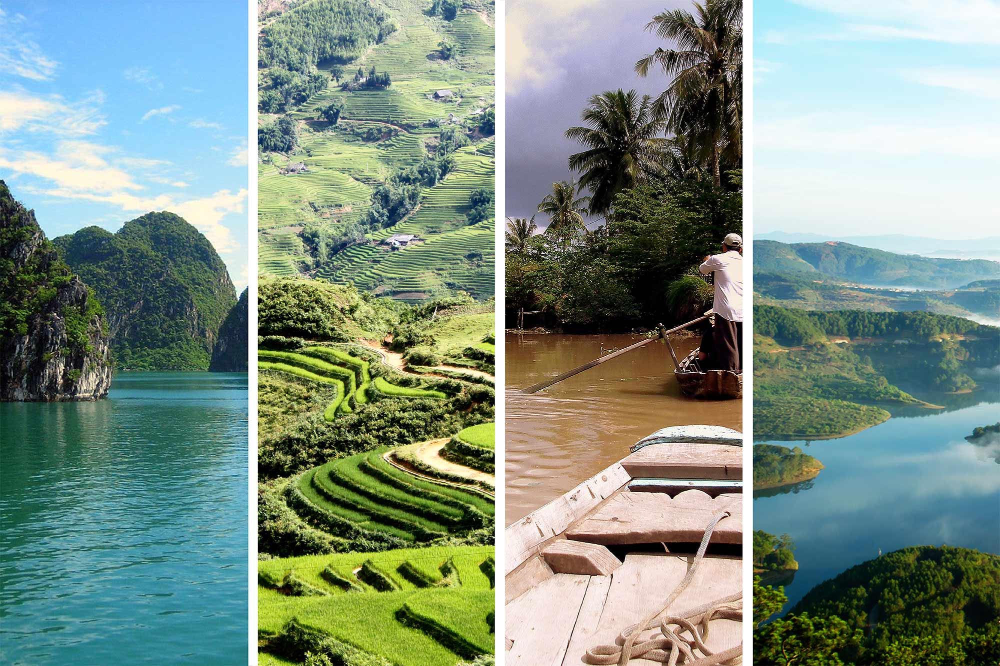

Climate in Vietnam
One of the major climate justice issues in Vietnam is flooding and sea-level rise. Due to its geography and topography, Vietnam faces increasing challenges from rising sea levels, leading to more frequent and severe floods, storm surges, and saltwater intrusion.
Climate Justice Issues
In recent years, climate change and extreme weather events like floods, droughts, and saltwater intrusion have adversely affected the livelihoods and food security of 17 million people living in the Delta. It is the fertile region in Vietnam and supplies most of the country's rice, aquatic products, and fruits.
.jpg)
Impact on Communities
- There is a risk of injury and death in communities, especially those with limited access to healthcare, after extreme weather events, such as typhoons. Floods can also cause the spread of waterborne diseases.
- In rural areas, especially, climate change may exacerbate gender inequalities by increasing the burden on women who care for families and must cope with the effects.
- Climate-related disruptions can negatively affect coastal and rural farmers and fishermen. These disruptions may cause them to lose income and experience food insecurity, which has a negative impact on their basic needs.
Software and Technology Solutions
Technology has become increasingly important to our daily lives, as evidenced by the COVID-19 pandemic, where online and consumer-oriented services are on the rise, including digital payments, online education, remote healthcare, online medical assistance, collaborations, entertainment online, personalized customer service, and manufacturing assistance.
This information is invaluable for developing strategies for developing climate-resilient agriculture, water resources, and infrastructure in Vietnam. Software applications can be used to analyze and predict trends in climate data to predict trends and patterns.
Provide educational games, interactive maps, infographics, and other apps and websites to educate the public about climate change and its impacts on Vietnam.
A significant amount of biodiversity exists in Vietnam, and software technology has the potential to assist in monitoring and preserving forests and wildlife. The use of drones, satellite imagery, and data analysis tools are necessary to identify changes in forest habitats.